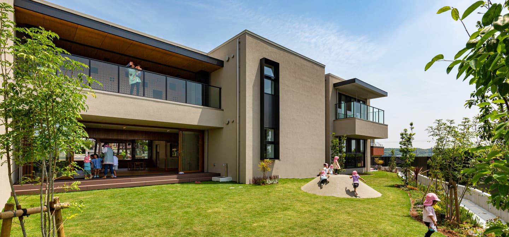
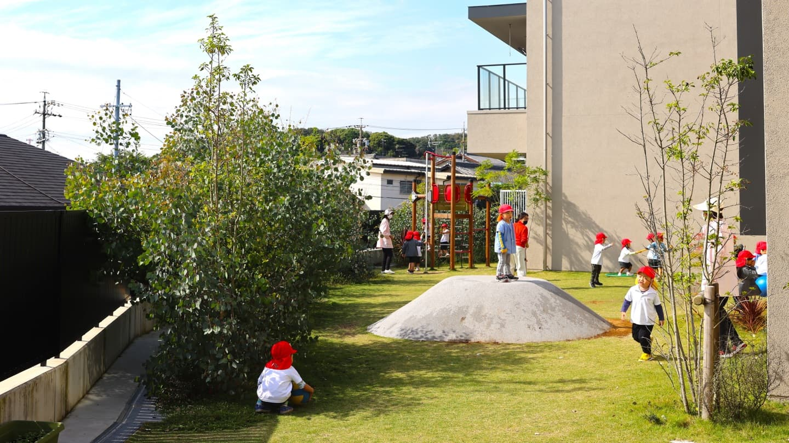
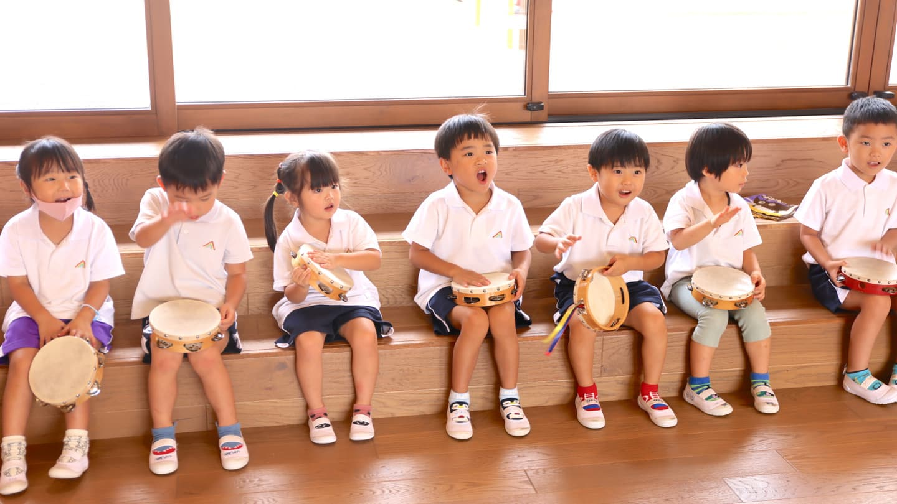
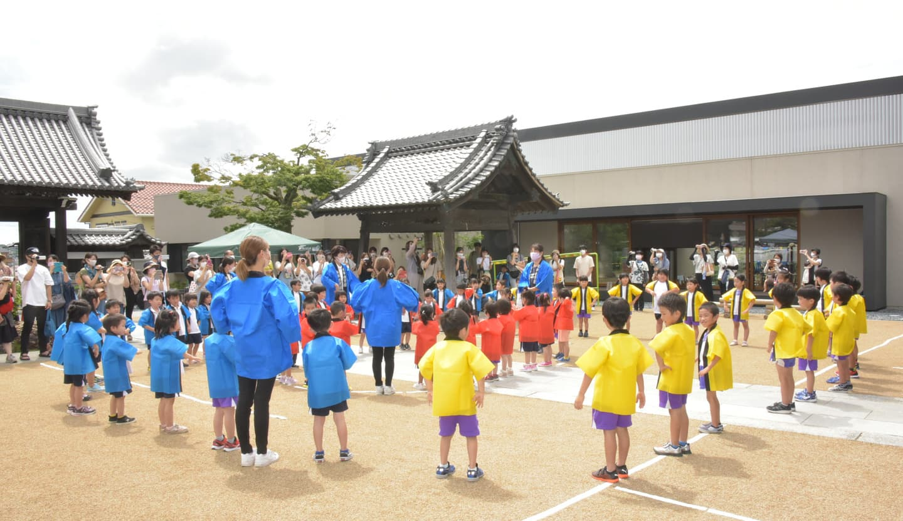
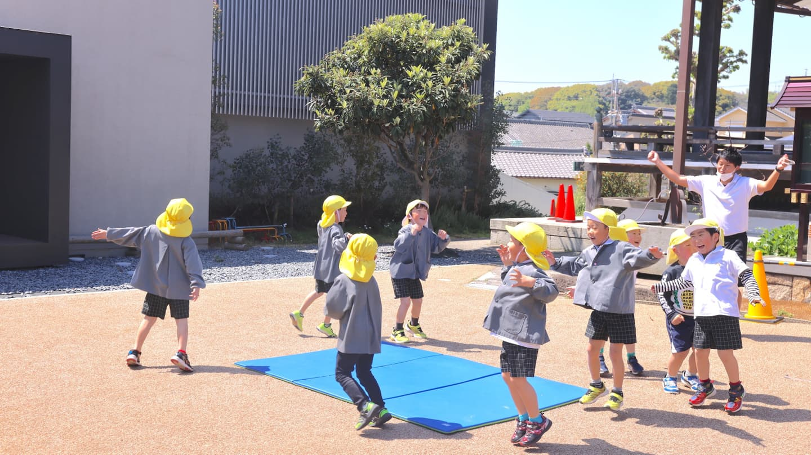
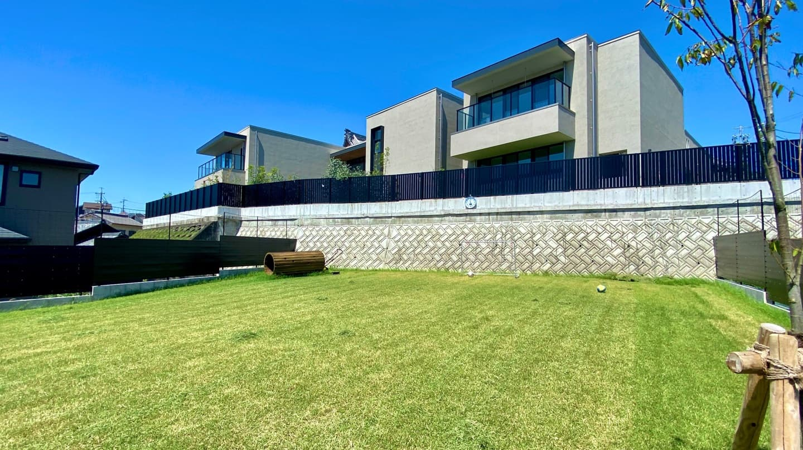

先ず獣身を成して、後に人心を養う
阿久比町 幼保連携型認定こども園NEWSお知らせ
PHOTO ALBUM園の様子







INFORMATION園の概要・アクセス
| 園名 | 幼保連携型認定こども園 いしざかやまこどもえん |
|---|---|
| 運営法人 | 社会福祉法人 南部保育園 |
| 所在地 | 愛知県知多郡阿久比町植大石坂37 |
| 電話 | 0569-48-6603 |
| 対象 | 0歳児（満1歳）〜5歳児クラス |
| 開園時間 | 平日 午前7時30分〜午後7時00分 土曜 午前7時30分〜午後4時00分 （早朝・延長保育を含む） |
| 分園 | にじっここどもえん |